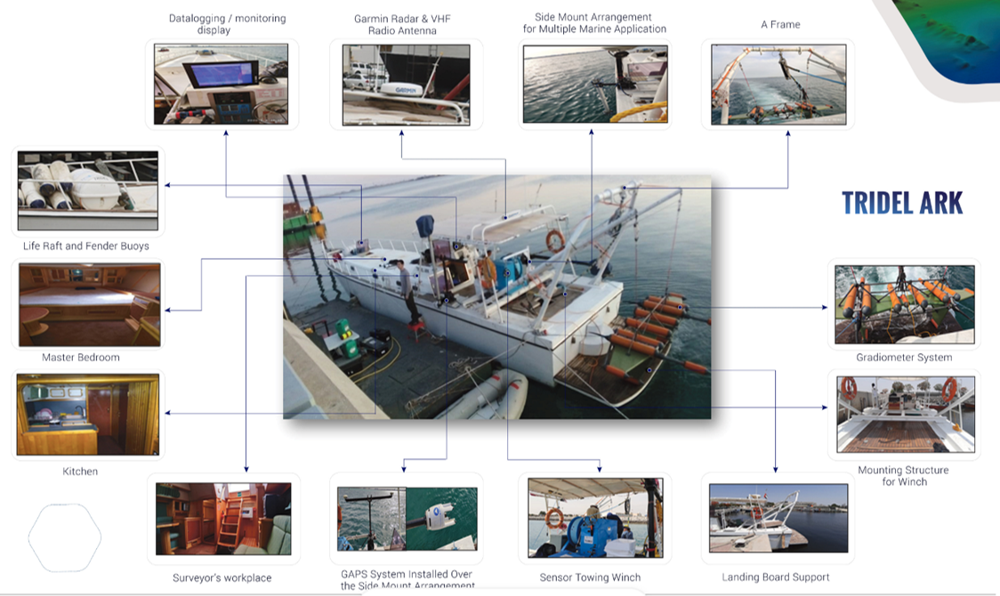

Tridel Ark
Built in the UAE, this durable fiberglass monohull survey vessel is powered by inboard diesel stern-drive engines—ideal for Gulf waters. Customisable for shallow water seismic/magnetic surveys and other specialized operations.
Key Features
- Rugged Construction: Durable fiberglass monohull built in the UAE for long-lasting performance.
- Gulf-Ready Power: Inboard diesel stern-drive engines, ideal for Gulf water conditions.
- Comfort & Control: Features an air-conditioned survey room for operational efficiency.
- Deck Equipment: Equipped with A-frame and winches for versatile deployment.
- Precision Navigation: High-precision Garmin GPSMAP 1022xsv with CHIRP, SideVu, and Panoptix.
- Survey Capable: Fully customisable for shallow water seismic and magnetic surveys.

Click to Enlarge